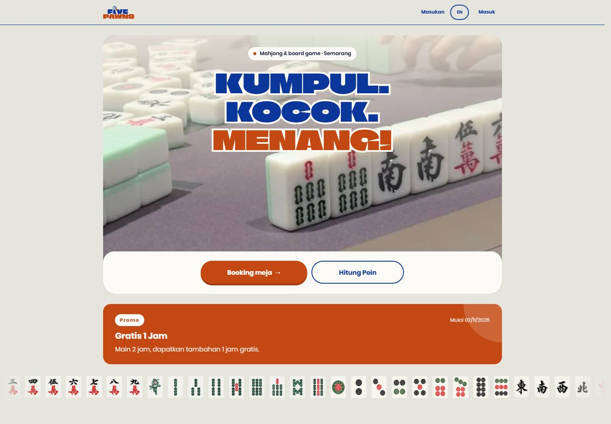
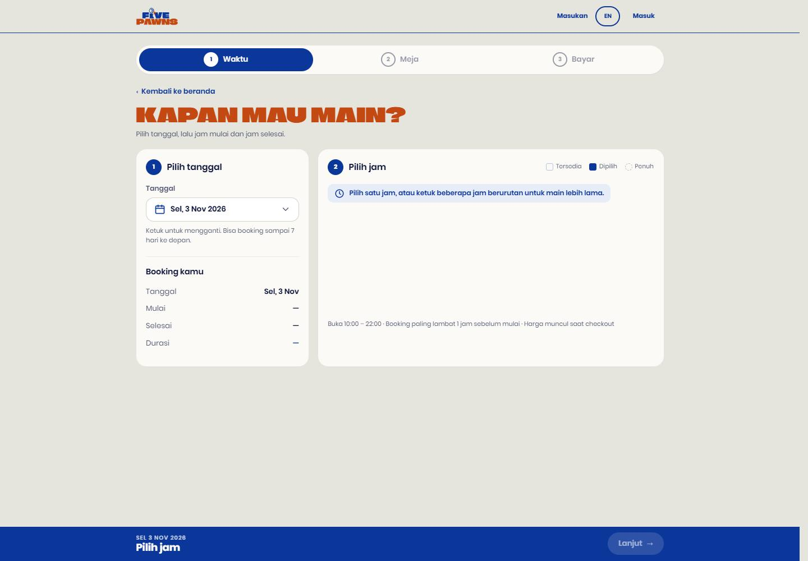
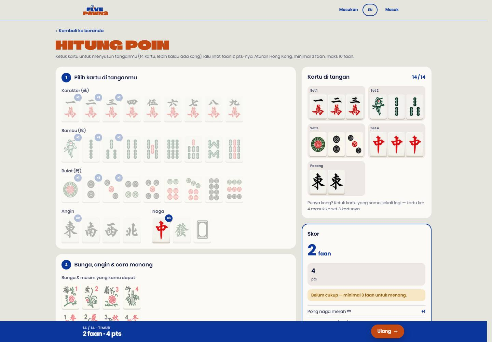
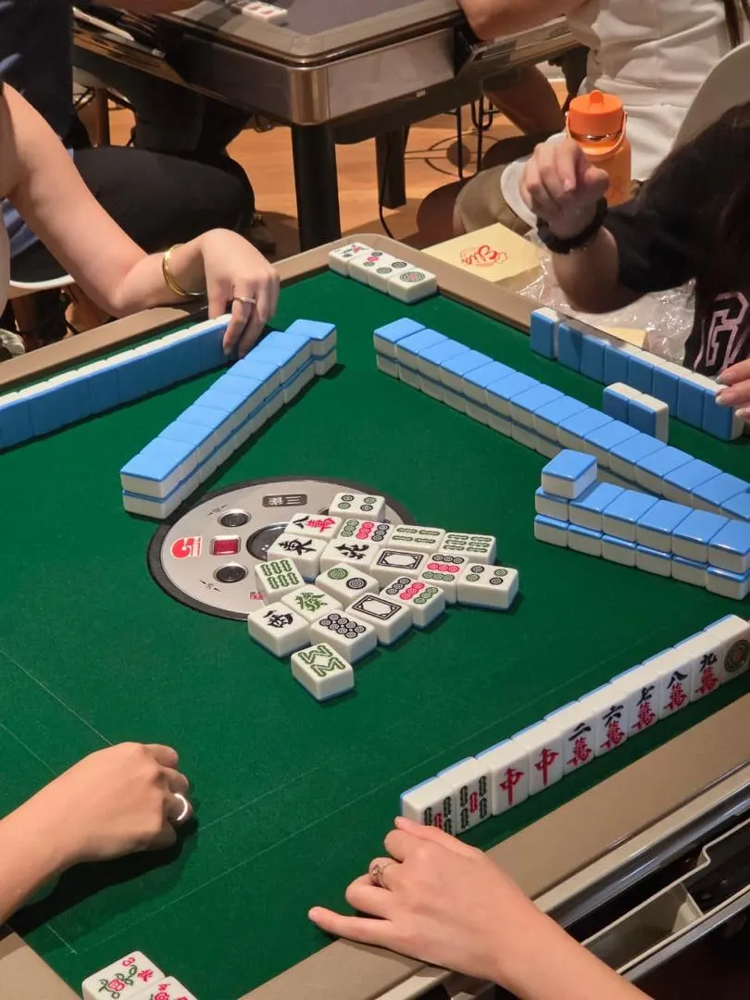
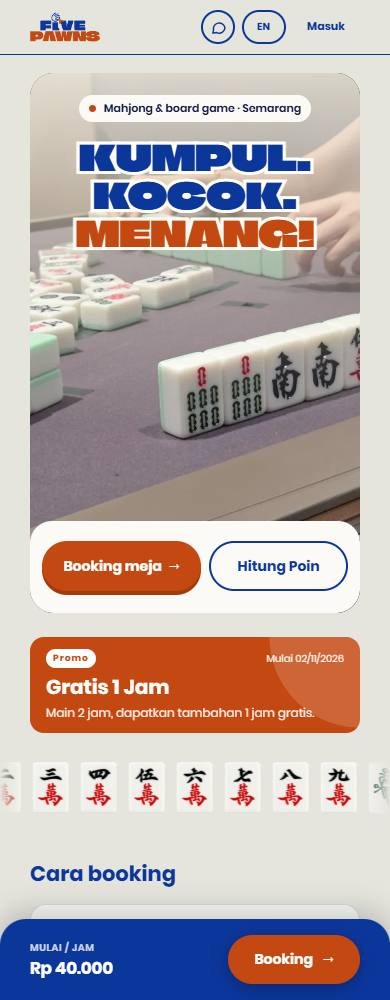

A website I designed and built for FivePawns, a real mahjong and board-game venue in Semarang. It brings table booking, a mahjong score calculator and the business's online presence into one place.
ProjectIndividual · Personal project
RoleDesign & development
StackReact · CSS · JavaScript · Firebase

The live FivePawns website, bringing the venue and its two main tools together.
01 · The business need
More than a storefront.
The website needed to help people plan a visit and support them once they were at the table. I built around four practical needs, from introducing the venue to helping staff manage reservations.
01
Plan a session
Let customers check available hours, choose a table and understand the booking total before committing.
02
Work out the score
Give players a visual way to enter a mahjong hand and see the points and scoring breakdown.
03
Get to know the venue
Show the space, promotions, opening hours and location, with clear routes to booking and contact.
04
Keep bookings organised
Give staff a place to view the schedule and review payment proof, alongside the customer-facing website.
02 · The booking experience
Find a table. Make a plan.
A three-step flow separates time selection, table choice and checkout. Customers make one decision at a time, with their selection carried forward.

Date and time selection on the live website. Availability is read from Firestore.
01
Pick a time
Choose a date and consecutive hourly slots. Available, selected and full states distinguish what can be booked.
02
Choose a table
See table types, prices and availability for the selected period, then choose a specific table.
03
Review and confirm
Review the total, enter contact details and choose QRIS or payment at the venue. Google sign-in connects the booking to the customer.
A clear handoff after booking
QRIS customers upload payment proof for staff review. Pay-at-venue customers receive their reservation details. Status updates and a WhatsApp handoff keep the next step visible.
On mobile, the primary action stays within reach at the bottom of the screen. The browser's back button also returns to the previous booking step.
03 · The mahjong calculator
Your hand. Your score.
Players tap tile images to build their hand, then add flowers, winds and the way they won. The calculator shows the faan, points and each scoring item, including a warning when a hand falls below the minimum.

A sample hand with its scoring breakdown and minimum-faan warning.
Visual inputPlayers choose recognisable tile images and can tap a selected tile to remove it.
Explain the resultThe breakdown shows where faan comes from, rather than presenting an unexplained total.
Make the rules visibleThe calculator uses Hong Kong scoring with the venue's flower rules, a three-faan minimum and a ten-faan cap. It also reminds players that table rules can differ.
04 · Supporting the business
A place to play. A reason to visit.


Let the venue lead
Photographs of the real space and bold blue-and-orange typography give the site its own identity. Promotions sit close to the booking route, while directions, opening hours and WhatsApp contact help visitors plan their trip.
Two clear starting pointsBooking a table and calculating points are the main homepage actions.
Built for local useIndonesian and English copy, rupiah pricing and QRIS reflect how customers use the business.
Tools for staffA separate dashboard supports the day schedule, active sessions and payment review. Owner settings control tables, prices, opening hours and selected website content.
05 · My role & the build
From design to deployment.
This is my individual personal project for a real business. My work covers the customer-facing design, responsive pages, booking flow, score calculator and the staff tools behind them.
The stack used in the project
Technology
What it does
React & React Router
Build the customer and admin interfaces, with page navigation that keeps shared state available.
JavaScript / JSX & HTML
Handle booking selections, pricing, score calculation and the page structure rendered by React.
CSS
Style the brand, responsive layouts, mobile controls and interface states.
Firebase Authentication
Connect customer bookings and staff access to Google sign-in.
Cloud Firestore
Store bookings, table-hour slots, payment proof and business settings, with live updates and security rules.
Vite & Firebase Hosting
Build the React project and publish the website.
Bookings and their table-hour slots are written together. Firestore rules validate the reservation, while the interface responds if another customer takes a selected slot before checkout.
See it in action.
Explore the live FivePawns website, or try building a hand in the mahjong calculator.